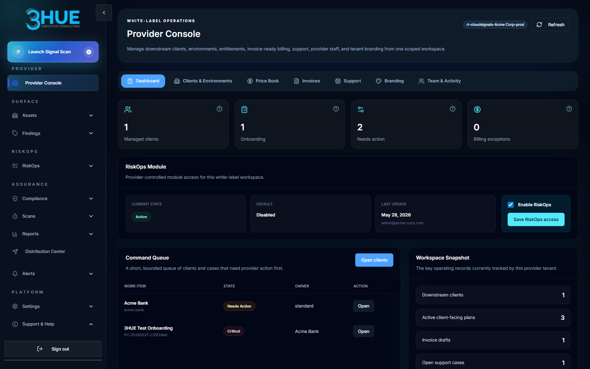
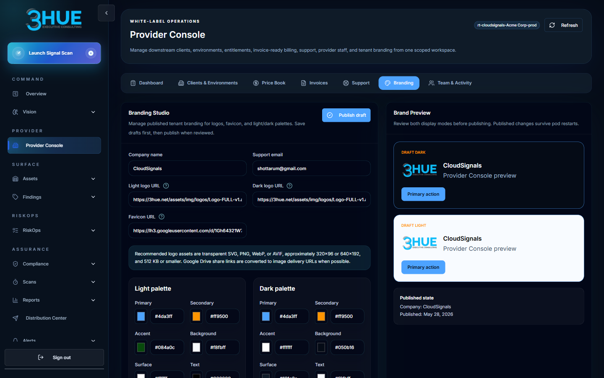
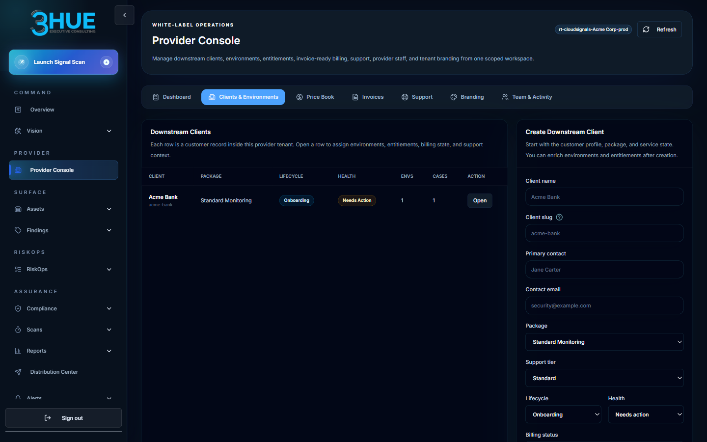
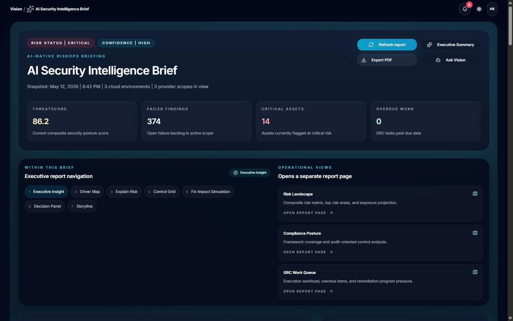
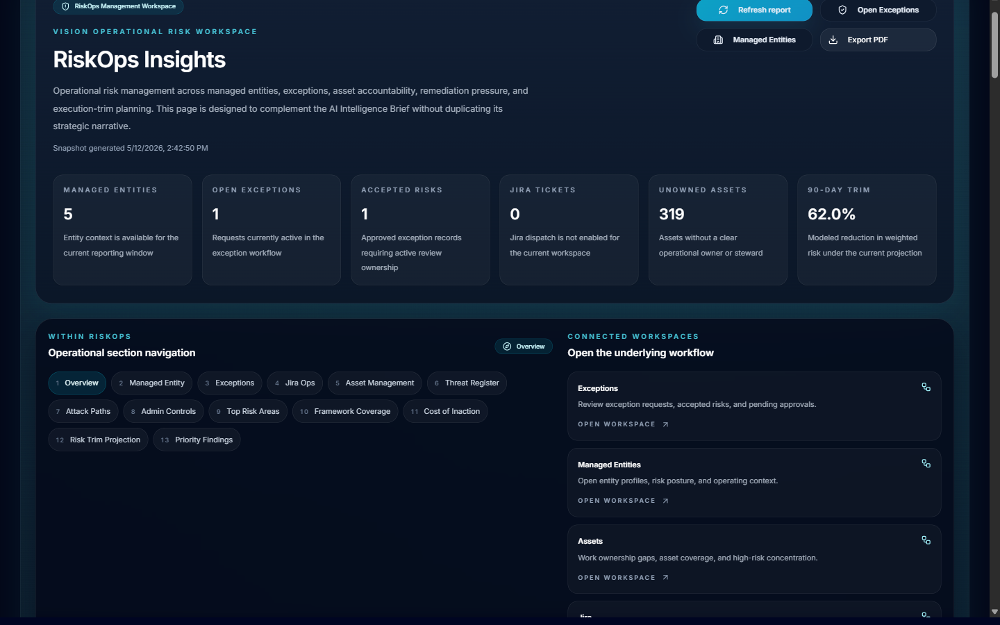

Provider Onboarding Foundations
This course teaches provider teams how to launch and operate a CloudSignals white-label service. You'll learn the provider model, the five-phase go-live framework, client onboarding, findings quality standards, and the reporting cadence that keeps clients informed and engaged.
The Provider Model
Understand what a white-label provider tenant is, who owns what, and where the boundaries lie.
What a white-label provider tenant is
A white-label provider tenant is a branded CloudSignals workspace operated by a partner, managed service provider, advisory firm, or internal service team. It lets the provider present CloudSignals under their own brand while retaining the full platform capability underneath.
The provider tenant is the operational hub. From it, the provider team:
- Onboards and manages downstream clients — the businesses whose cloud environments are assessed.
- Runs posture scans and reviews findings on behalf of or alongside clients.
- Manages risk treatment and compliance workflows.
- Prepares and delivers client-facing reports and operating reviews.
Core terms at a glance
| Term | What it means |
|---|---|
| Provider | The organization operating the white-label CloudSignals service — your organization. |
| Client | A customer or business entity whose cloud environment the provider manages or assesses. |
| Client environment | A cloud account, subscription, project, or deployment environment connected to CloudSignals. |
| Finding | A detected security, compliance, exposure, or configuration issue identified by a scan. |
| Risk treatment | The decision and work activity used to remediate, mitigate, accept, or transfer a risk. |
| Risk Register | The operating record of risk items, treatment plans, ownership, status, and evidence. |
| Managed entity | A GRC profile representing a client organization, business unit, or reporting scope used for risk intelligence and ownership context. |
| Entitlement | The features and module access granted to the provider or client — e.g., whether RiskOps is enabled. |
| Provider Console | The provider administration workspace for managing clients, entitlements, billing drafts, branding, and provider team activity. |
Role model
Provider access should follow least privilege. Every provider team member should have the minimum role required to do their job. Shared accounts are not permitted.
| Role | What they do | What they need access to |
|---|---|---|
| Provider Admin | Full provider workspace administration — branding, users, clients, entitlements, GRC config, RiskOps | Provider Console, all settings |
| Provider Operator | Day-to-day client operations — scans, assets, findings, risk work queues, reports | Clients, scans, findings, RiskOps |
| Provider Support | Client support and triage — status checks, limited operational views | Support records, client status views |
| GRC Admin | Governance setup — managed entities, GRC users, GRC AI settings, role assignment | GRC Administration |
| Provider Auditor | Read-only review — reports, audit activity, selected GRC/RiskOps views | Dashboards, reports, read-only views |

What the provider is and is not responsible for
Provider is responsible for
Branding, user management, client onboarding, scan scheduling, findings triage quality, risk register maintenance, client-facing reporting, support escalation, and data handling practices.
AiVRIC is responsible for
Underlying platform operation, tenant availability, security controls, product capabilities, connector integrations, and escalation support for platform issues.
Launch Phases
The five-phase framework from tenant readiness to operational rollout.
Every CloudSignals provider launch follows five phases. Each phase has a clear entry state and exit criteria. Moving to the next phase before the current phase is complete is the most common cause of go-live delays.
Phase 1 — Tenant Readiness
What happens: AiVRIC provisions the provider tenant. Provider confirms name, logo, favicon, and color palette. Provider confirms the administrator list, support contacts, portal URL, sign-in flow, package, and launch scope.
Exit criteria: Portal loads, branding is confirmed, administrator list is finalized, and launch scope is agreed.
Phase 2 — Provider Team Setup
What happens: Provider administrators, operators, and support users are invited. Roles are assigned. The delivery team reviews this training. A pilot client environment is selected.
Exit criteria: All provider users can sign in. Roles are confirmed. Training is complete. Pilot client is identified.
Phase 3 — First Client Onboarding
What happens: Create the client record. Collect cloud account identifiers. Configure cloud access. Run the first scan. Validate findings and coverage. Prepare the first client-facing review.
Exit criteria: First scan complete, findings validated, first review delivered or scheduled.
Phase 4 — Operational Rollout
What happens: Additional client environments are connected. Scan cadence and review cadence are established. Remediation and risk treatment tracking begins. Reporting templates are finalized. Support and escalation rhythm is established.
Exit criteria: Multiple clients active, recurring cadences running, support workflow tested.
First 30 days success plan
| Week | Target outcome |
|---|---|
| Week 1 | Provider tenant branded and accessible. Administrators active. Pilot client selected. First environment connected. Initial scan completed. |
| Week 2 | Findings reviewed and validated. Top risks entered into Risk Register. Reporting format confirmed. First client-facing review scheduled. |
| Week 3 | Remediation tracking active. Additional provider users trained. Support workflow tested. Second client or environment planned. |
| Week 4 | Operating review cadence established. Package and service assumptions reviewed. Provider success metrics defined. Expansion plan agreed. |
Branding & Portal Setup
Verify the portal is client-ready before onboarding begins.
What to verify before using the portal with clients
Branding is not cosmetic — a provider portal that shows incorrect names, missing logos, or default AiVRIC branding creates client confusion and signals an unprepared service. Complete the branding checklist before scheduling any client interaction through the portal.
Logo technical requirements
- Use HTTPS or root-relative URLs — the browser must be able to load the image without sign-in.
- Supported formats: SVG, PNG, WebP (preferred). JPG when transparency is not needed.
- Recommended dimensions: 320×96 or 640×192 pixels.
- Recommended maximum file size: ~512 KB.
- Transparent backgrounds are strongly recommended — they work in both light and dark modes.
- If no dark logo URL is supplied, the light logo is used in dark mode — test this before launch.

Client Onboarding Workflow
Connect a client environment end to end and validate the first scan.
The nine-step onboarding workflow
Follow these steps for every new client. Skipping steps — especially commercial confirmation and scope agreement — is the most common cause of scope disputes and access issues.
Cloud provider access notes
| Provider | Access method | Key validation |
|---|---|---|
| AWS | Read-only IAM role via role assumption; organization-wide access via SCP if multi-account | Confirm account ID and region scope; confirm organization-wide access is intentional before enabling broad scans |
| Azure | Service Principal with Reader + Security Reader permissions; Management Group scope if multiple subscriptions | Confirm tenant ID, subscription IDs; validate management group scope if used |
| Google Cloud | Service Account with viewer IAM roles; project-level or folder/org level | Confirm project IDs and organization scope; validate folder-level discovery expectations |
| Kubernetes | Read-only RBAC ClusterRole; kubeconfig or service account token | Confirm cluster name, namespace scope; avoid collecting secrets or workload data outside approved scope |
Information to collect for each client
Identity & contact
Legal client name, display name, primary business contact, primary technical contact, support expectations.
Environment details
Cloud provider, account / subscription / project IDs, environment type (prod / staging / dev), scan scope, regions or namespaces.
Service context
Package or service tier, reporting cadence, compliance frameworks in scope, special handling requirements.

Operating Findings & Risk Register
Turn raw scan results into actionable, client-ready risk intelligence.
Findings as operational records
Findings should be handled as operational records, not just alerts. The difference matters: an alert mindset produces raw dumps that overwhelm clients; an operational records mindset produces context-rich, business-relevant risk intelligence that clients can act on.
Provider findings triage workflow
Triage dispositions
| Disposition | When to use | Required documentation |
|---|---|---|
| Remediate | The root cause should and can be fixed. | Fix description, assigned engineer, target completion date, verification method. |
| Mitigate | Full remediation is blocked; compensating controls reduce residual risk. | Compensating control description, reason remediation is deferred, future remediation date. |
| Accept | Residual risk is within risk appetite; business justification exists. | Named approver, justification statement, expiry date (time-bounded). |
| Transfer | Risk ownership or treatment is transferred to a third party (insurance, vendor). | Transfer recipient, coverage confirmation, residual risk assessment. |
| False positive | Finding does not apply or is not valid in this environment. | Documented reason; note so it can be reviewed if the control changes. |
Risk Register — What to capture
For each significant risk, the Risk Register should include:
Identity
Risk ID, title, description, managed entity / client scope, source findings.
Assessment
Severity, likelihood, business impact, risk level (composite).
Treatment
Treatment decision, action plan, assigned owner, due date, current status.
Evidence
Screenshots, scan evidence, remediation confirmations, exception approvals.
Findings quality standards
- Group related findings when presenting to clients — five findings on the same IAM misconfiguration is one conversation, not five.
- Explain business impact in plain language — "S3 bucket publicly accessible" means nothing to a CFO; "Customer contract data accessible to anyone on the internet" drives action.
- Separate urgent fixes from maturity improvements — Critical/High findings needing immediate action should be clearly differentiated from Medium/Low hygiene items.
- Validate before presenting — confirm findings are genuine and applicable before putting them in a client review.


Reporting & Client Reviews
Deliver structured, consistent reviews that build client confidence.
Reporting cadence
| Client type | Cadence | Audience |
|---|---|---|
| New client — first review | Within 7 days of initial scan | Client technical contact and business contact |
| Active managed client | Monthly operating review | Client technical contact |
| High-risk or regulated client | Weekly or biweekly risk review | Client technical contact, compliance lead |
| Executive sponsor | Quarterly business review (QBR) | Client executive, provider executive sponsor |
Recommended report contents
1. Executive summary
Current posture state, material changes since last review, top 1–3 business risks requiring attention.
2. Environment scope
Cloud providers covered, accounts/subscriptions scanned, date and age of last scan.
3. Critical & high findings
New, open, and remediated findings since last review. Grouped by theme or service, not as a raw list.
4. Risk Register changes
New risks added, risks closed, changes in treatment status, any expired exceptions.
5. Remediation progress
Treatment plans with overdue status, completed remediations, and MTTR trend if available.
6. Recommended next actions
Prioritized action items with owners and timelines. Client action items distinguished from provider action items.


What not to include in client communications
Support escalation workflow
When an issue cannot be resolved at the provider level, escalate to AiVRIC support. When escalating, always include:
- Provider name and portal URL
- Client name and environment name
- User email if access-related
- Time of issue and approximate duration
- Screenshot or error message (with secrets removed)
- Steps already attempted